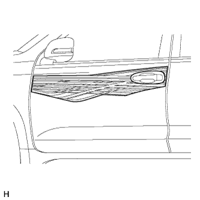
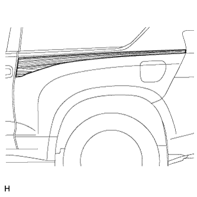
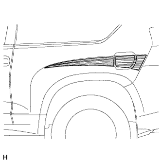

ДЕКОРАТИВНАЯ ОТДЕЛКА (для 3-дверных моделей) > СНЯТИЕ |
| Параметр / Устройство | Температура |
| Кузов автомобиля | 40-60°C (104-140°F) |
| Лента декоративной отделки | 20–30°C (68–86°F) |
| 1. СНИМИТЕ ДЕКОРАТИВНУЮ ПОЛОСУ ЛЕВОГО КРЫЛА |
 |
Чтобы снять ленту декоративной отделки, оттяните ее край и вытяните ленту параллельно кузову автомобиля.
| 2. СНИМИТЕ ЛЕНТУ ЛЕВОЙ ПЕРЕДНЕЙ БОКОВОЙ ПАНЕЛИ |
|  |
Чтобы снять ленту декоративной отделки, оттяните ее край и вытяните ленту параллельно кузову автомобиля.
| 3. СНИМИТЕ ВЕРХНЮЮ ЗАДНЮЮ ЛЕНТУ ЛЕВОЙ ЗАДНЕЙ БОКОВОЙ ПАНЕЛИ |
|  |
Чтобы снять ленту декоративной отделки, оттяните ее край и вытяните ленту параллельно кузову автомобиля.
| 4. СНИМИТЕ ЛЕНТУ ЛЕВОЙ ЗАДНЕЙ БОКОВОЙ ПАНЕЛИ |
|  |
Чтобы снять ленту декоративной отделки, оттяните ее край и вытяните ленту параллельно кузову автомобиля.